Para a equipe de desenvolvimento e a Garantia da Qualidade. Registro completo de defeitos do módulo Produção encontrados nos testes de tela, com o passo a passo para reproduzir, o trecho do código onde o problema está e uma sugestão de correção, inclusive os de acesso e segurança. Cada defeito traz também como confirmar a correção (o caso de teste a repetir). Atualizado em 2026-11-01.
Resumo
10 defeitos registrados, 5 em aberto. Pendentes por gravidade: 0 crítica · 1 alta · 7 média · 1 baixa.
Pendentes por tipo: 2 funcional · 0 norma · 0 acesso/segurança · 7 ambiente/dados.
Origem: 0 já estavam na página "Defeitos para correção" do portal e 10 são novos neste registro (os de acesso e segurança, antes só nos documentos confidenciais, e os encontrados depois da última publicação).
Gravidade: Alta = afeta a qualidade do produto, a conformidade com a ANVISA ou impede uma tarefa; Média = atrapalha, mas há como contornar; Baixa = incômodo ou texto.
Situação: Aberto: ainda não corrigido · Em correção: um desenvolvedor assumiu · Corrigido: o desenvolvedor entregou, falta o reteste · Validado: o reteste passou · Descartado: aberto por engano ou explicado por uma regra do sistema; não precisa de correção.
Tipo: funcional = a tela ou a regra não faz o que deveria · norma = fere a RDC 658/2022 ou o Guia 33/2020 (registro, rastreabilidade, validade, justificativa) · acesso/segurança = controle de acesso, senha, sessão ou exposição de dados · ambiente/dados = problema de configuração, instalação ou carga de dados.
Cuidado: este documento não traz senhas, logins, endereços de servidor, strings de conexão nem chaves; onde o assunto exige, cita só o arquivo.
Contagem por gravidade e por tipo (todos os registros, inclusive os encerrados)
| Tipo | Alta | Média | Baixa | Total |
|---|---|---|---|---|
| funcional | 0 | 0 | 1 | 1 |
| norma | 0 | 0 | 0 | 0 |
| acesso/segurança | 0 | 0 | 0 | 0 |
| ambiente/dados | 0 | 1 | 7 | 0 |
| Total | 0 | 1 | 8 | 1 |
Índice por tipo
- funcional (2): DV-PRO-001, DV-PRO-003.
- norma (0): .
- acesso/segurança (0): .
- ambiente/dados (8): DV-PRO-002, DV-PRO-004, DV-PRO-005, DV-PRO-006, DV-PRO-007, DV-PRO-008, DV-PRO-009, DV-PRO-010.
Todos os defeitos
| Id | Defeito | Gravidade | Situação | Tela | Encontrado em |
|---|---|---|---|---|---|
| DV-PRO-010 | Solicitação da cadeia de Produção não localizada no Estoque | Alta | Aberto | SOLICITAÇÃO DE MATERIAL (PRODUÇÃO / COMERCIAL) | R10-01 / CT-EST-082, 2026-10-31 |
| DV-PRO-001 | Mensagem genérica ao rejeitar item de Estoque já associado | Média | Não reproduzido em reteste | Cadastro de Insumos | B1 — insumo ligado ao item de Estoque, 2026-10-30 |
| DV-PRO-002 | LogBook não carrega o visualizador de relatórios | Média | Aberto | LOGBOOK | Fase E2 — geração do LogBook, 2026-10-30 |
| DV-PRO-004 | Links de Profissional e Conta usuário apontam para instalação fora do ambiente | Média | Aberto | Principal > Cadastros | R6-07, 2026-11-04 |
| DV-PRO-005 | Solicitação bloqueada por conversão de medida ausente na massa | Média | Aberto | Solicitação de Autorizações | R6-04A a R6-04G, 2026-11-04 |
| DV-PRO-006 | Sessão expira durante a gravação do Registro de Limpeza | Média | Não reproduzido em reteste | Registro de Limpeza | R6-05, 2026-11-04 |
| DV-PRO-007 | Item de estoque da massa sem unidade impede conversao | Média | Aberto | Item / Conversao de Unidade | R7-01 e R7-02, 2026-11-05 |
| DV-PRO-008 | Variáveis obrigatórias ausentes na sessão de execução | Média | Descartado | Preparação do acesso, antes do navegador | R8-01 a R8-07, 2026-10-31 |
| DV-PRO-009 | Ambiente de teste inacessível antes do login na rodada 10 | Média | Não reproduzido em reteste | Acesso inicial ao ambiente, antes do login | R10-01; bloqueia R10-02 a R10-06, 2026-10-31 |
| DV-PRO-003 | Programação de Limpeza não conclui a gravação | Baixa | Não reproduzido em reteste | Programação de Limpeza | CT-PRO-057, 2026-10-30 |
DV-PRO-010
Solicitação da cadeia de Produção não localizada no Estoque
| Gravidade | Situação | Tela | Caso de teste | Encontrado em | Norma afetada |
|---|---|---|---|---|---|
| Alta | Aberto | SOLICITAÇÃO DE MATERIAL (PRODUÇÃO / COMERCIAL) | R10-01 / CT-EST-082 | 2026-10-31 (rodada 10, retomada) | — |
| Tipo: ambiente/dados · Já estava no portal: não |
O que acontece
Com o acesso recuperado, a consulta sem filtros e sua repetição não localizaram a solicitação da cadeia Solicitação de Autorizações 1 / Ordem 6.
Como reproduzir
- Autenticar no Principal e abrir Estoque.
- Abrir Solicitação de Material (Produção), pesquisar sem código, período ou centro de custo e aguardar o postback.
- Repetir a pesquisa uma vez e conferir produto, lote, data e situação.
Dados de teste usados: ['Solicitação de Autorizações 1', 'Ordem 6 — TESTE OPE R3', 'Produto 27 — TESTE ITEM CAD', 'Lote Padrão 2 — TESTE LOTE PADRAO R3', 'TESTER901']
Esperado e obtido
| Esperado | Obtido |
|---|---|
| Localizar a solicitação vinculada à cadeia para separar/atender TESTER901. | Ambas as consultas retornaram 00033 (21/08/2026, CONCLUÍDA), 00050 (22/10/2026, CONCLUÍDA), 00051 (22/10/2026, FINALIZADA), 00064 (22/10/2026, FINALIZADA) e 00065 (22/10/2026, CONCLUÍDA). Produto e Lote Produção vazios em todas. Nenhum erro de aplicação exibido. |
Evidências

Figura 1: R10-01-passo-2
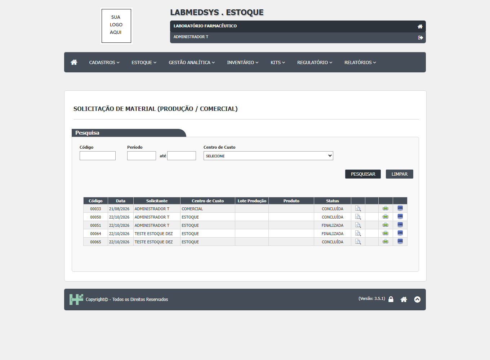
Figura 2: R10-01-passo-3
Onde está no código
Causa (provável): Hipótese pelo código (a confirmar com o log do servidor): ao salvar a Solicitação de Autorizações, a Produção grava o registro (dalSolicitacao SalvarProducao) e só depois chama a integração com o Estoque (bllStartProducao.cs:126 e 170-230), que cria a solicitação no Estoque, autoriza automaticamente a autorização do Estoque ("Integração Automática") e insere as confirmações. As duas etapas não estão na mesma transação. Na rodada 9 a tela ficou 300 segundos sem responder; se a integração falhou ou demorou depois de a Solicitação 1 ser gravada, o registro ficou sem solicitação no Estoque, com a autorização do Estoque pendente e a grade de confirmação vazia, exatamente como observado. (Certeza: hipótese reforçada: reproduzido 2 de 2; o registro grava e a etapa seguinte (integração com o Estoque) falha sem aviso ao usuário)
| Arquivo | Linhas | O que faz |
|---|---|---|
LaboSys_BLL/bllStartProducao.cs |
126 | |
LaboSys_BLL/bllStartProducao.cs |
170-230 | |
Integracao_Producao_Estoque/bllItemIntegracao.cs |
244-280 |
Caminhos a partir da pasta app/ do módulo (2.producao/app).
Sugestão de correção
- TI/DBA: conferir no log do servidor (pasta de erros do ElmahLogError e log4net, ver homologacao/COMO-LER-OS-ERROS-DO-SERVIDOR.md) o erro ocorrido na gravação da Solicitação 1 (31/10/2026, cerca de 17:04). Na versão nova, gravar a produção e a reserva no Estoque numa única transação (nada de registro pela metade).
Como confirmar a correção
Rodada 11 (segunda ocorrência): a Solicitação 2 foi gravada (ficha confirma, 31/10/2026 22:45), mas a janela "Confirma a inclusão do item?" ficou na tela por 15 minutos, sem mensagem de sucesso nem de erro; o servidor respondeu em 1,5 segundo (HTTP 200), portanto não é lentidão. As quatro autorizações ficaram pendentes, sem "Integração Automática",. A consulta no Estoque não foi feita (crédito do Codex acabou). Reprodução 2 de 2. Correção (leitura tela a tela, 01/11/2026): a coluna "Ordem de Produção" da lista mostra a ficha técnica escolhida pela GQ e fica vazia enquanto a GQ não autoriza; ela não é sintoma do defeito. O sinal verdadeiro é a autorização do Estoque pendente, sem "Integração Automática" e sem confirmações.
Observações
Uma repetição realizada. Passo 1 interrompido conforme o prompt; passos 2 a 6 não iniciados. Nenhum dado alterado e nenhuma confirmação manual forçada. Não classificado como falha funcional confirmada.
DV-PRO-001
Mensagem genérica ao rejeitar item de Estoque já associado
| Gravidade | Situação | Tela | Caso de teste | Encontrado em | Norma afetada |
|---|---|---|---|---|---|
| Média | Não reproduzido em reteste | Cadastro de Insumos | B1 — insumo ligado ao item de Estoque | 2026-10-30 (rodada 1) | a definir |
| Tipo: funcional · Já estava no portal: não |
O que acontece
Ao tentar incluir o insumo TESTE MATERIA PRIMA associado ao item de Estoque TST0001, a tela apresentou a mensagem exata ‘Erro na inclusão do Insumo Principal’ e o cadastro não apareceu na consulta posterior. A tentativa adicional solicitada nesta retomada foi iniciada, mas não chegou à gravação; permanece necessária para reteste.
Como reproduzir
- Abrir Produção > Cadastros > Cadastro de Insumos.
- Selecionar Incluir e preencher a descrição TESTE MATERIA PRIMA, grupo INSUMOS - ATIVO e unidade kg.
- Abrir a seleção de Item de Estoque e associar TST0001.
- Salvar o registro e consultar novamente a lista.
Dados de teste usados: ['TESTE MATERIA PRIMA', 'TST0001']
Esperado e obtido
| Esperado | Obtido |
|---|---|
| O insumo TESTE MATERIA PRIMA é salvo associado ao item de estoque TESTE, e aparece na consulta. | A tela mostrou ‘Erro na inclusão do Insumo Principal’; o registro não apareceu após nova consulta. |
Evidências
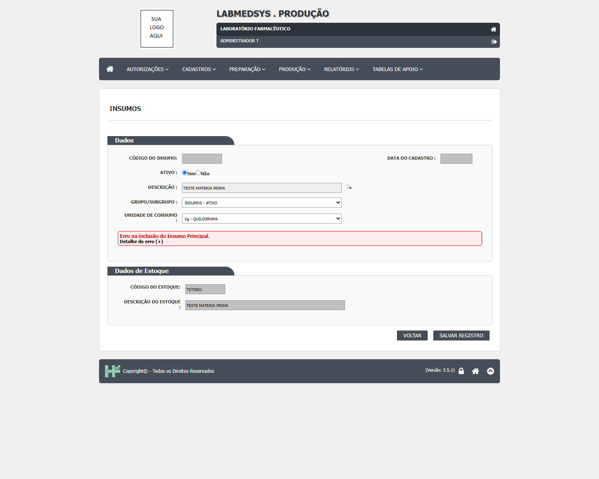
Figura 1: PREP-B1-insumo-salvo
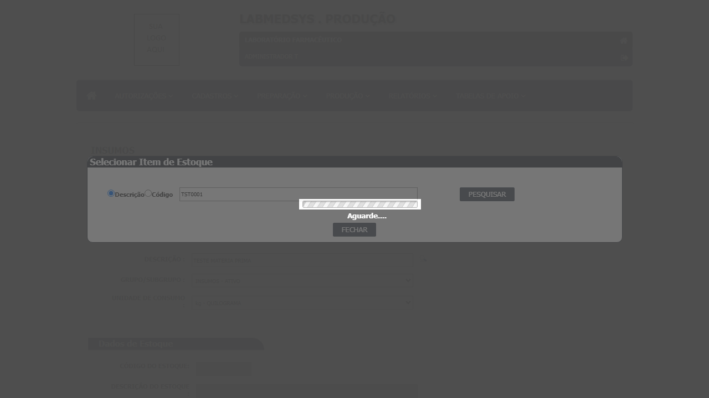
Figura 2: PREP-B1-retry-insumo-antes
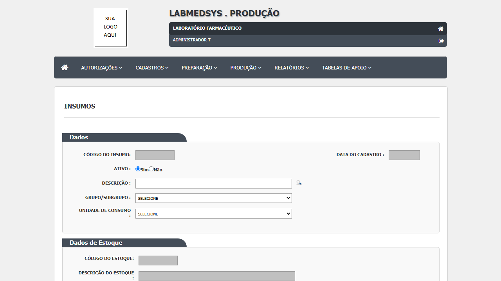
Figura 3: PREP-B1-retry-insumo-form
Onde está no código
Causa (provável): a investigar (Certeza: a investigar)
Como confirmar a correção
Confirmado parcialmente em 2026-10-31: TST0001 já está associado a TESTE MATERIA PRIMA (código 14). Os insumos alvo foram salvos com itens TESTE distintos e livres (TST0002 e 00002), e a ficha confirmou os vínculos. Em 2026-11-02, a pesquisa do Cadastro do Produto encontrou o produto 27 tanto pelo código interno TESTE-PRO-R3 quanto pela descrição TESTE ITEM CAD, após espera do postback. A ressalva anterior de filtro não foi reproduzida.
Observações
Não alterar TST0001; é um registro de teste existente de outro módulo. Em 31/10/2026, o item TST0001 foi confirmado na ficha do insumo TESTE MATERIA PRIMA, código 14; não foi alterado. As associações novas usaram itens diferentes. Reclassificado como não reproduzido no reteste de filtro de 02/11/2026.
DV-PRO-002
LogBook não carrega o visualizador de relatórios
| Gravidade | Situação | Tela | Caso de teste | Encontrado em | Norma afetada |
|---|---|---|---|---|---|
| Média | Aberto | LOGBOOK | Fase E2 — geração do LogBook | 2026-10-30 (rodada 1) | a definir |
| Tipo: ambiente/dados · Já estava no portal: não |
O que acontece
Ao imprimir o LogBook filtrado para o equipamento TESTE, a janela de relatório mostra erro informando que a dependência Microsoft.ReportViewer.Common, versão 11.0.0.0, não foi encontrada. O relatório não é renderizado. A evidência foi recortada para omitir caminhos internos do servidor.
Como reproduzir
- Abrir Produção > Relatórios > LOGBOOK pelo menu.
- Selecionar o período de 01/10/2026 a 30/10/2026 e o equipamento TESTE EQUIPAMENTO VAR C.
- Clicar em IMPRIMIR.
Dados de teste usados: ['TESTE EQUIPAMENTO VAR C - TST-VC']
Esperado e obtido
| Esperado | Obtido |
|---|---|
| Abrir o LogBook filtrado com cabeçalho e registros do equipamento TESTE. | A janela abre uma página de erro de aplicação: dependência Microsoft.ReportViewer.Common versão 11.0.0.0 ausente; o relatório não aparece. |
Evidências
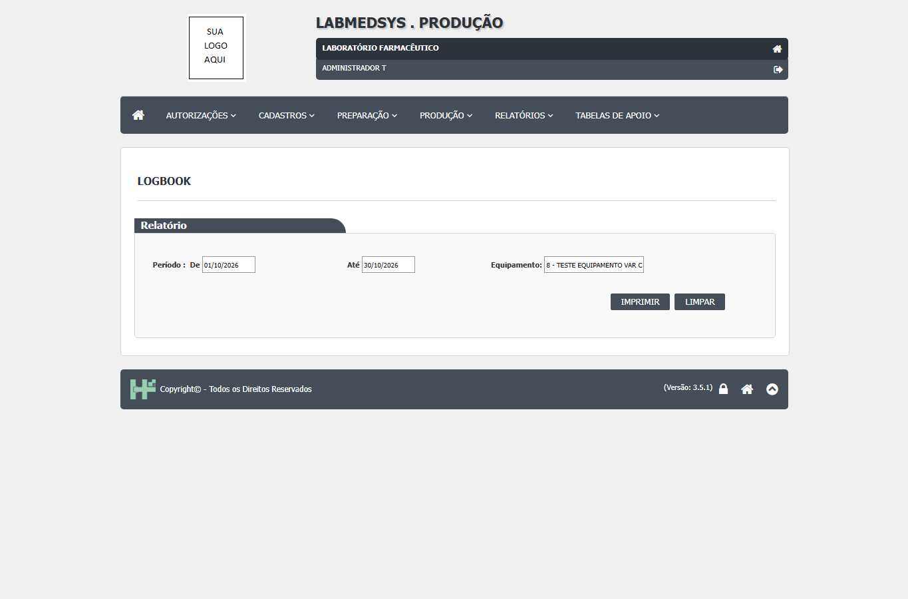
Figura 1: E-LOGBOOK-filtro
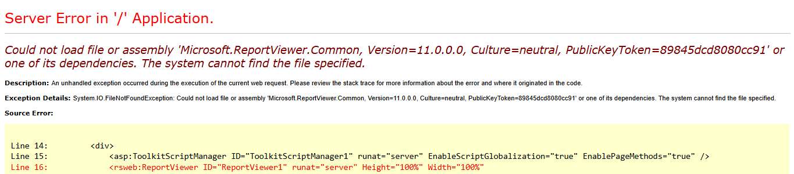
Figura 2: E-LOGBOOK-erro-redigido

Figura 3: E-RP14-render

Figura 4: E-RP13-render

Figura 5: E-RP12-render

Figura 6: E-RP11-render

Figura 7: E-RP04-render

Figura 8: E-RP02-render
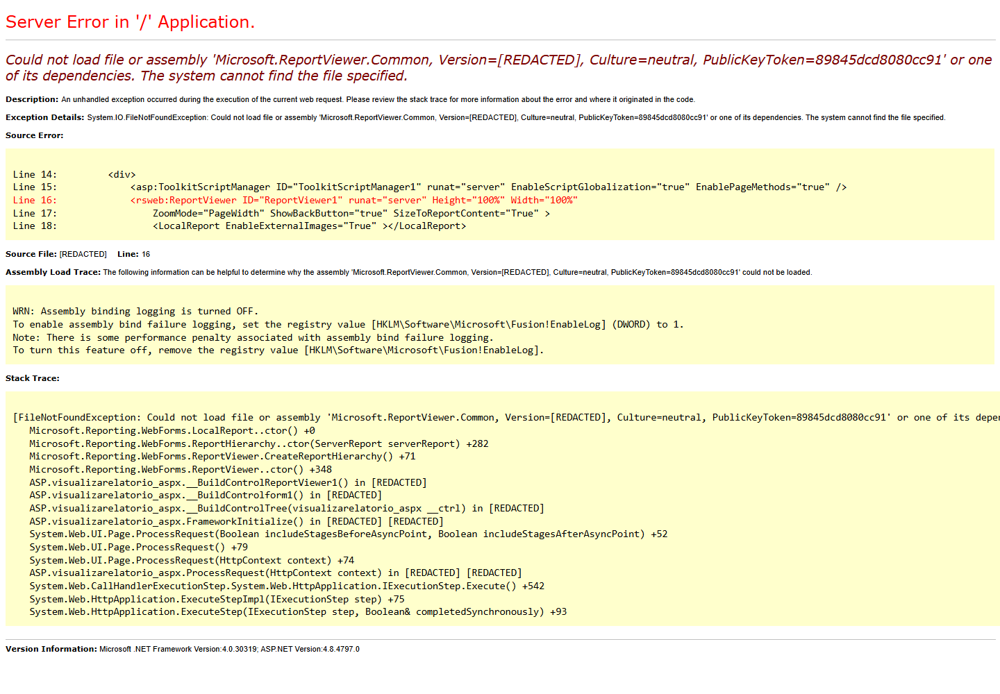
Figura 9: E-RP08-render
Onde está no código
Causa (confirmada): Dependência Microsoft.ReportViewer.Common indisponível no ambiente do relatório, conforme mensagem exibida.
Como confirmar a correção
Retestado em 2026-10-31: RP14, RP13, RP12, RP11, RP04, RP02 e RP08 abriram a janela do relatório e repetiram a falha de dependência Microsoft.ReportViewer.Common; o conteúdo não renderizou. As outras telas foram abertas e capturadas, mas não geraram relatório por ausência de registros/pré-requisitos (RP09, RP06, RP07 e Impressão Bol. Quar. PA); RP03 ficou sem seleção por não haver produto e Lote Padrão confirmados. Evidências da rodada 2 em homologacao/2.producao/execucao/2026-10-31-rodada-2/evidencias. Caminhos internos foram removidos das capturas. Manter aberto como ambiente/dados.
Observações
Não registrar caminhos internos exibidos na página de erro. Reteste de 2026-10-31 reproduziu a indisponibilidade do ReportViewer em sete relatórios; capturas sanitizadas na pasta da rodada 2.
DV-PRO-004
Links de Profissional e Conta usuário apontam para instalação fora do ambiente
| Gravidade | Situação | Tela | Caso de teste | Encontrado em | Norma afetada |
|---|---|---|---|---|---|
| Média | Aberto | Principal > Cadastros | R6-07 | 2026-11-04 (rodada 6) | a definir |
| Tipo: ambiente/dados · Já estava no portal: não |
O que acontece
Os links originais de Profissional e Conta usuário apontam para instalação fora do ambiente autorizado; os caminhos relativos autorizados abriram as telas.
Como reproduzir
- Abrir Principal > Cadastros.
- Acionar Profissional ou Conta usuário pelo link original.
- Verificar que o destino não pertence ao ambiente autorizado.
Esperado e obtido
| Esperado | Obtido |
|---|---|
| Abrir as telas no mesmo ambiente do sistema. | Links originais apontam para instalação fora do ambiente. |
Evidências
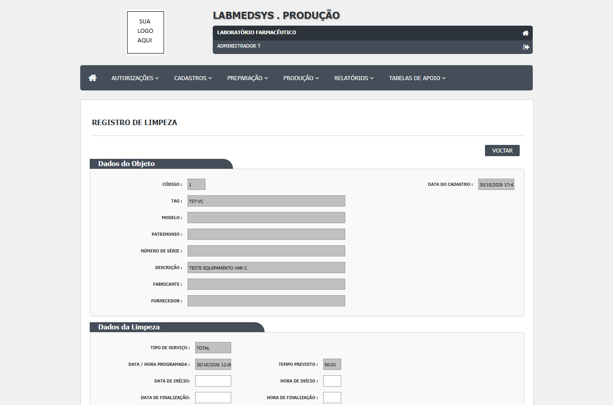
Figura 1: R6-07-menu-sem-endereco
Onde está no código
Causa (confirmada): Endereço de módulo configurado incorretamente no Principal.
Sugestão de correção
- Ajustar o endereço dos módulos no cadastro do Principal.
Como confirmar a correção
As telas abriram pelos caminhos relativos autorizados; o link original continua pendente.
Observações
A captura não contém endereço de servidor.
DV-PRO-005
Solicitação bloqueada por conversão de medida ausente na massa
| Gravidade | Situação | Tela | Caso de teste | Encontrado em | Norma afetada |
|---|---|---|---|---|---|
| Média | Aberto | Solicitação de Autorizações | R6-04A a R6-04G | 2026-11-04 (rodada 6) | — |
| Tipo: ambiente/dados · Já estava no portal: não |
O que acontece
Solicitação do produto 27 e lote padrão 2 não criada por pré-requisito de conversão de medida.
Como reproduzir
- Selecionar produto 27 TESTE ITEM CAD e lote 2 TESTE LOTE PADRAO R3.
- Informar previsão 31/10/2026 08:00.
- Salvar e confirmar SIM.
Dados de teste usados: ['Produto 27', 'Lote Padrão 2', 'Ordem 6']
Esperado e obtido
| Esperado | Obtido |
|---|---|
| Criar solicitação com massa preparada e conversões válidas. | Existe Item de Insumo sem cadastro de conversão de medida! |
Evidências
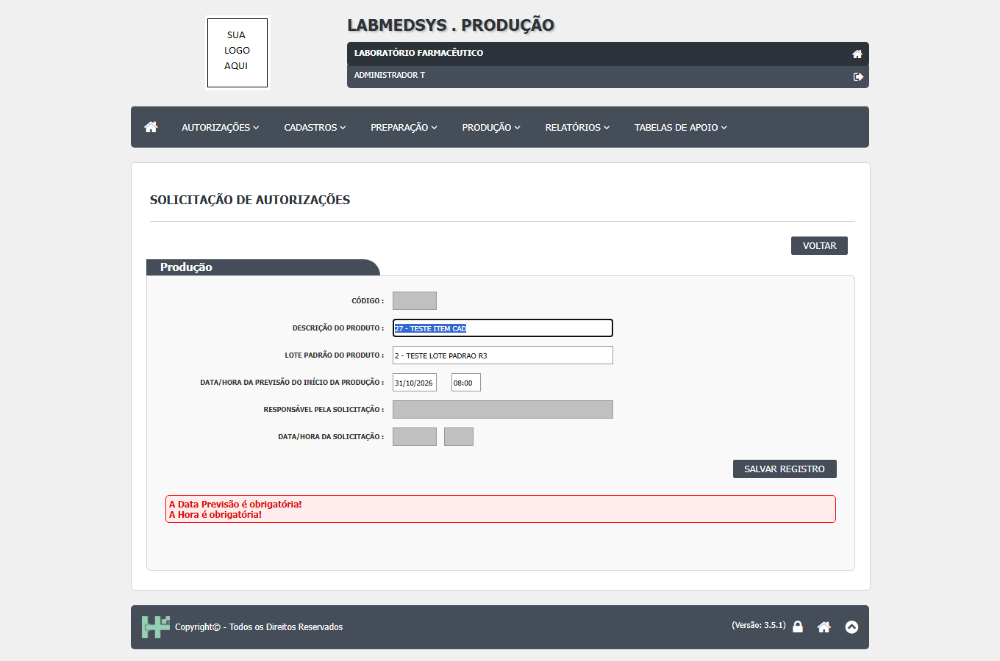
Figura 1: R6-04-passo-1
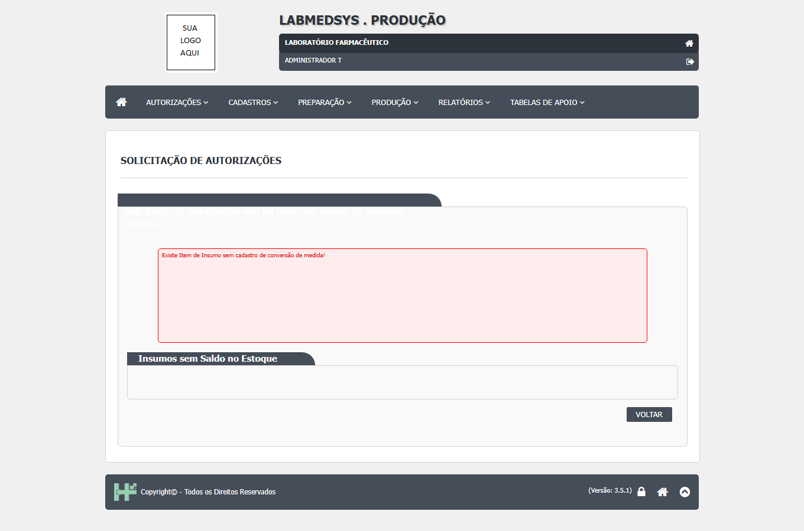
Figura 2: R6-04-passo-2

Figura 3: R7-03-solicitacao-bloqueio
Onde está no código
Causa (provável): Validação de conversão da integração com Estoque recusou a massa; item específico não identificado na mensagem. (Certeza: Pré-requisito confirmado no código; cadastro específico a conferir)
| Arquivo | Linhas | O que faz |
|---|---|---|
LaboSys_UI/producao/start_producao_ed.aspx.cs |
419 | |
LaboSys_BLL/bllStartProducao.cs |
155 |
Caminhos a partir da pasta app/ do módulo (2.producao/app).
Sugestão de correção
- Conferir e cadastrar a conversão de medida dos insumos TESTE vinculados ao lote padrão; retomar solicitação e cadeia.
Como confirmar a correção
Rodada 7: nova gravação retornou críticas de conversão e saldo. Rodada 8: insumo 15 foi religado a TESTER901 e foi criada conversão mg para kg, fator 0,000001; a repetição da solicitação terminou em TimeoutError antes de confirmar a gravação. Rodada 9: solicitação 1 criada e confirmada na lista e ficha; nenhuma crítica de conversão ou saldo. Na autorização Estoque x Produção, a confirmação do item 15 exibiu Nenhum registro encontrado; a autorização permaneceu pendente. Bloqueio contornado parcialmente pela massa da rodada 8, sem alteração de código. Revisão (Claude): a grade de confirmação do Estoque vazia é esperada com o módulo Estoque ativo, pois a tela esconde o botão de adicionar (autorizacao_estoque_producao_ed.aspx.cs:221) e as linhas são inseridas pelo Estoque via serviço (inserirConfirmacaoProducao, 3.estoque/app/LaboSys.IntegracaoEstoqueProducao/bllIntegracaoEstoqueProducao.cs:15). Inferência a confirmar na rodada 10: o atendimento da solicitação no Estoque gera as linhas.
Observações
Rodada 7 confirmou que o item vinculado TST0002 esta sem unidade de medida (SELECIONE); a conversao nao pode ser associada enquanto esse pre-requisito e o saldo nao forem corrigidos.
DV-PRO-006
Sessão expira durante a gravação do Registro de Limpeza
| Gravidade | Situação | Tela | Caso de teste | Encontrado em | Norma afetada |
|---|---|---|---|---|---|
| Média | Não reproduzido em reteste | Registro de Limpeza | R6-05 | 2026-11-04 (rodada 6) | a definir |
| Tipo: ambiente/dados · Já estava no portal: não |
O que acontece
A gravação do registro de limpeza terminou com a mensagem Sessão Expirada; a persistência não pôde ser confirmada na repetição.
Como reproduzir
- Abrir a programação 1 TST-VC.
- Preencher lotes TESTELOTE001 e TESTELOTE002, executor e datas.
- Clicar em SALVAR REGISTRO.
Dados de teste usados: ['Programação 1 TST-VC', 'TESTELOTE001', 'TESTELOTE002']
Esperado e obtido
| Esperado | Obtido |
|---|---|
| Gravar o registro e voltar à lista. | Sessão Expirada! Faça login novamente. |
Evidências
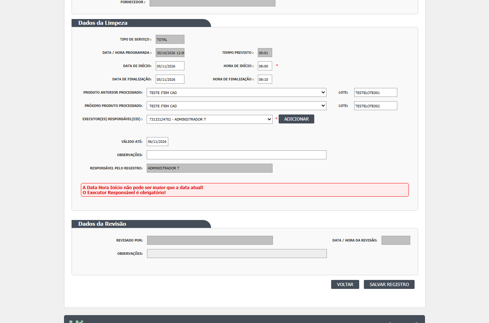
Figura 1: R7-05-limpeza-validacao
Onde está no código
Causa (confirmada): Sessão expirada durante o postback; causa de ambiente a investigar.
| Arquivo | Linhas | O que faz |
|---|---|---|
LaboSys_UI/preparacao/registro_limpeza_ed.aspx.cs |
451 |
Caminhos a partir da pasta app/ do módulo (2.producao/app).
Sugestão de correção
- TI deve verificar a estabilidade da sessão e o postback da tela.
Como confirmar a correção
Rodada 7: tentativa rápida após abertura da tela, com preenchimento em menos de dois minutos e duas confirmações SIM. Não expirou a sessão; a validação recusou a data de início futura e informou que o executor responsável era obrigatório. Rodada 9: postback da autorização do equipamento retornou Sessão Expirada; repetição após novo login autorizou o equipamento com sucesso. O defeito de sessão permanece aberto para a primeira tentativa. Revisão (Claude): na rodada 9 o Registro de Limpeza gravou normalmente (início anterior ao servidor, executor adicionado à grade, dois SIM, conferido na lista). A falha original ficou explicada por uso do robô (data futura e executor sem clicar em Adicionar). A única Sessão Expirada vista foi no primeiro envio da autorização do equipamento, depois de espera longa; a repetição funcionou. Reabrir como defeito novo se repetir em espera curta.
Observações
Persistencia continua nao confirmada. O bloqueio observado nesta rodada e de validacao dos dados; nenhuma limpeza ou exclusao executada.
DV-PRO-007
Item de estoque da massa sem unidade impede conversao
| Gravidade | Situação | Tela | Caso de teste | Encontrado em | Norma afetada |
|---|---|---|---|---|---|
| Média | Aberto | Item / Conversao de Unidade | R7-01 e R7-02 | 2026-11-05 (rodada 7) | — |
| Tipo: ambiente/dados · Já estava no portal: não |
O que acontece
O item TST0002, vinculado ao insumo 15 do Lote Padrao 2, esta sem unidade de medida e o campo esta desabilitado na edicao.
Como reproduzir
- Consultar o insumo 15 em Configuracoes Insumos Producao.
- Abrir o item TST0002 no Estoque.
- Tentar cadastrar conversao ativa para as unidades.
Dados de teste usados: ['Insumo 15', 'Item TST0002', 'Lote Padrao 2']
Esperado e obtido
| Esperado | Obtido |
|---|---|
| Item com unidade de estoque definida e conversao ativa aplicavel ao insumo. | Unidade do item exibida como SELECIONE; campo desabilitado. A solicitacao retorna tambem Insumos sem Saldo no Estoque. |
Evidências
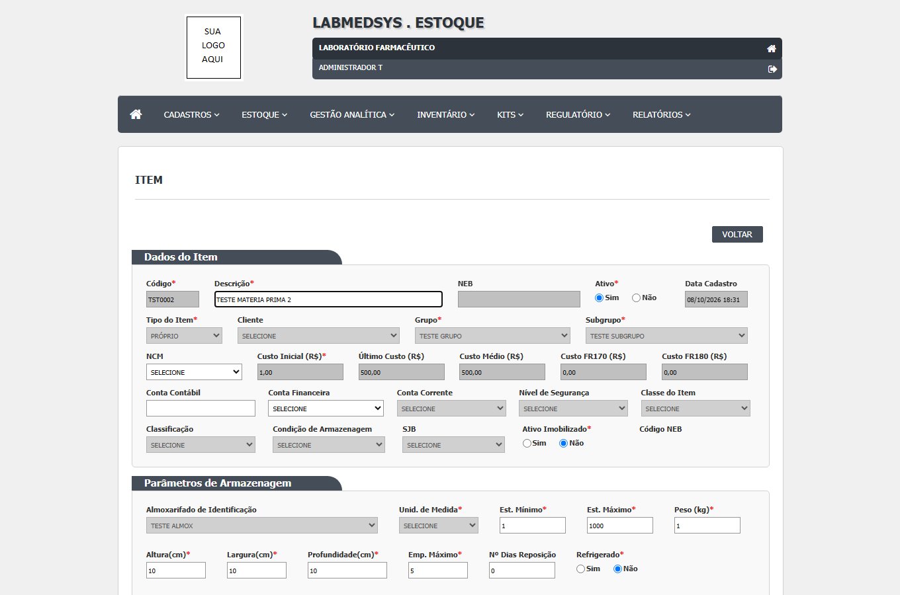
Figura 1: R7-01-estoque-unidade
Figura 2: R7-03-solicitacao-bloqueio
Onde está no código
Causa (confirmada): Pre-requisito de dados ausente no cadastro do item; a tela nao permite alterar a unidade em registro existente.
| Arquivo | Linhas | O que faz |
|---|---|---|
Estoque/BLL/bllApresentacaoProduto.cs |
129 | |
Integracao_Producao_Estoque/bllItemIntegracao.cs |
194-203 |
Caminhos a partir da pasta app/ do módulo (2.producao/app).
Sugestão de correção
- Estoque/DBA deve definir unidade e saldo coerentes para o item TESTE ou fornecer item TESTE equivalente; depois cadastrar conversao ativa.
Como confirmar a correção
Rodada 8: contornado para o insumo 15 com item TESTER901, kg, disponível 40,000. TST0002 não alterado; defeito original permanece aberto, sem afirmar correção do item.
Observações
Defeito de ambiente/dados; nao atribuido defeito funcional.
DV-PRO-008
Variáveis obrigatórias ausentes na sessão de execução
| Gravidade | Situação | Tela | Caso de teste | Encontrado em | Norma afetada |
|---|---|---|---|---|---|
| Média | Descartado | Preparação do acesso, antes do navegador | R8-01 a R8-07 | 2026-10-31 (rodada 8, identificada como 2026-11-06 pelo responsável) | — |
| Tipo: ambiente/dados · Já estava no portal: não |
O que acontece
A sessão não recebeu as três variáveis obrigatórias; nenhum teste de tela pôde ser iniciado.
Como reproduzir
- Verificar a presença das três variáveis obrigatórias sem exibir seus valores.
- Repetir a verificação uma vez.
Esperado e obtido
| Esperado | Obtido |
|---|---|
| Variáveis presentes no processo que executa os testes. | LABMEDSYS_URL ausente; LABMEDSYS_USUARIO ausente; LABMEDSYS_SENHA ausente. Mesmo resultado nas duas verificações. |
Evidências

Figura 1: resultado
Onde está no código
Causa (confirmada): Variáveis ausentes no processo de execução.
Sugestão de correção
- Definir as variáveis no ambiente que inicia o Codex e retomar a sessão; nunca enviar valores no chat ou gravá-los no repositório.
Como confirmar a correção
Retomada: oito nomes de variáveis conferidos, sem imprimir valores.
Observações
Bloqueio local, não falha funcional do legado. Sem acesso ao servidor e sem captura de tela do sistema. Data da rodada mantida conforme solicitação, distinta da data informada pelo ambiente de execução.
DV-PRO-009
Ambiente de teste inacessível antes do login na rodada 10
| Gravidade | Situação | Tela | Caso de teste | Encontrado em | Norma afetada |
|---|---|---|---|---|---|
| Média | Não reproduzido em reteste | Acesso inicial ao ambiente, antes do login | R10-01; bloqueia R10-02 a R10-06 | 2026-10-31 (rodada 10, identificada como 2026-11-08) | — |
| Tipo: ambiente/dados · Já estava no portal: não |
O que acontece
Navegação inicial falhou por conexão expirada nas duas tentativas, sem autenticação ou consulta ao Estoque.
Como reproduzir
- Abrir LABMEDSYS_URL pelo Playwright com limite de 300000 ms.
- Repetir uma vez fora das restrições de execução.
Esperado e obtido
| Esperado | Obtido |
|---|---|
| Página inicial carregada para autenticação e consulta da solicitação de produção. | page.goto: net::ERR_CONNECTION_TIMED_OUT nas duas tentativas, antes do login. |
Evidências

Figura 1: R10-01-acesso
Figura 2: R10-01-passo-1
Onde está no código
Causa (provável): Conectividade/VPN ou disponibilidade do ambiente a investigar. (Certeza: não determinada)
| Arquivo | Linhas | O que faz |
|---|---|---|
1.principal/app/LaboSys_UI/default.aspx.cs |
— | |
3.estoque/app/LaboSys_UI/estoque/solicitacao_lst.aspx.cs |
— |
Caminhos a partir da pasta app/ do módulo (2.producao/app).
Sugestão de correção
- TI deve verificar conectividade/VPN e disponibilidade do ambiente autorizado.
Como confirmar a correção
Na retomada solicitada pelo responsável, o login e a consulta no Estoque funcionaram, versão 3.5.1. Não reproduzido em reteste; não se afirma correção definitiva da infraestrutura. Novo bloqueio da consulta registrado separadamente como DV-PRO-010.
Observações
Novo bloqueio de ambiente, não falha funcional confirmada. Captura mostra estado vazio após timeout; erro exato está no arquivo textual sanitizado. Não se conclui ausência de solicitação ou falha de integração. Nenhum dado alterado.
DV-PRO-003
Programação de Limpeza não conclui a gravação
| Gravidade | Situação | Tela | Caso de teste | Encontrado em | Norma afetada |
|---|---|---|---|---|---|
| Baixa | Não reproduzido em reteste | Programação de Limpeza | CT-PRO-057 | 2026-10-30 (rodada 1) | a definir |
| Tipo: funcional · Já estava no portal: não |
O que acontece
Ao programar limpeza para o equipamento TESTE EQUIPAMENTO VAR C, o postback permaneceu com a indicação de espera e a consulta filtrada pela tag TST-VC não encontrou a programação, mesmo após conferir os campos de data e hora. Não há registro confirmado.
Como reproduzir
- Abrir Produção > Preparação > Programação de Limpeza pelo menu.
- Selecionar o tipo Equipamento e
TESTE EQUIPAMENTO VAR C - TST-VC. - Selecionar serviço Total, informar data 30/10/2026, hora 12:00 e tempo previsto 00:01.
- Clicar em Salvar e consultar novamente a lista pela tag TST-VC.
Dados de teste usados: ['TESTE EQUIPAMENTO VAR C - TST-VC']
Esperado e obtido
| Esperado | Obtido |
|---|---|
| A programação deve concluir e aparecer na lista de Programação de Limpeza. | A tela permaneceu em espera; a lista filtrada respondeu que a pesquisa não retornou nenhum resultado. |
Evidências
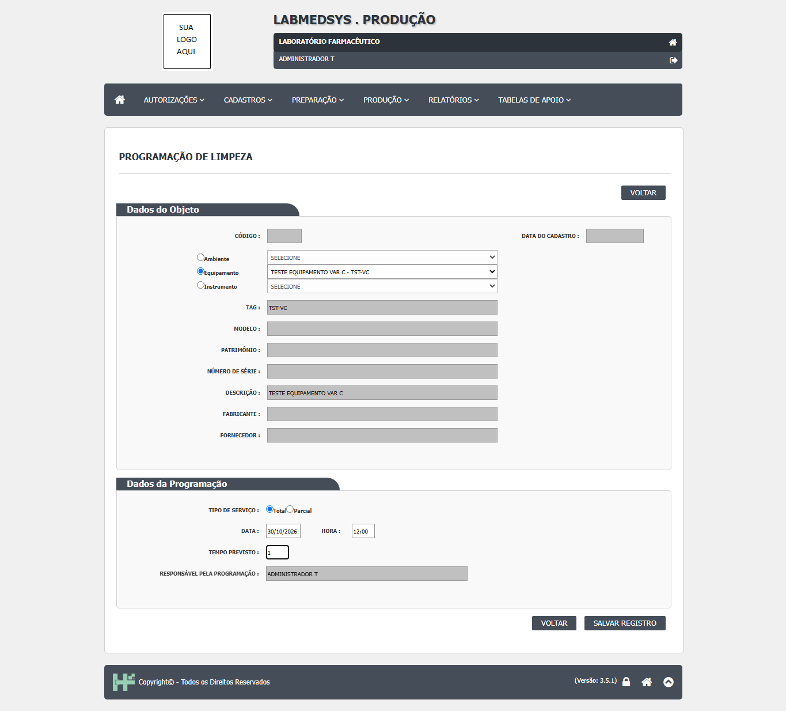
Figura 1: C-CT-PRO-057-passo-1-final
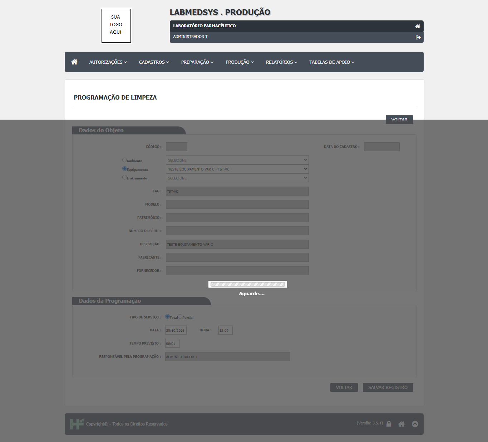
Figura 2: C-CT-PRO-057-passo-2-final
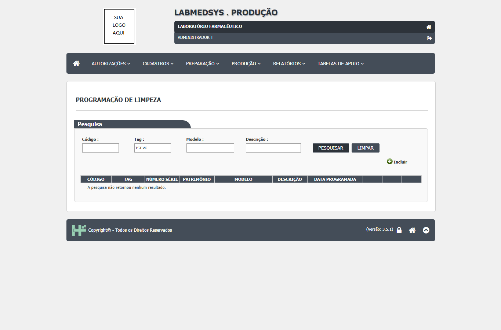
Figura 3: C-CT-PRO-057-lista-final
Onde está no código
Causa (provável): A investigar; o postback não apresentou mensagem conclusiva. (Certeza: não confirmada)
Como confirmar a correção
Em 02/11/2026, a primeira tentativa foi rejeitada pela máscara quando os campos foram preenchidos de uma vez. Na repetição com digitação tecla a tecla, a confirmação SIM fechou, apareceu Inclusão realizada com sucesso! e o registro 1, TST-VC, 30/10/2026 12:00 apareceu na lista. Reclassificar como não reproduzido.
Observações
As capturas mostram apenas ativo TESTE e dados fictícios. O problema anterior não se reproduziu após respeitar a máscara de data/hora.